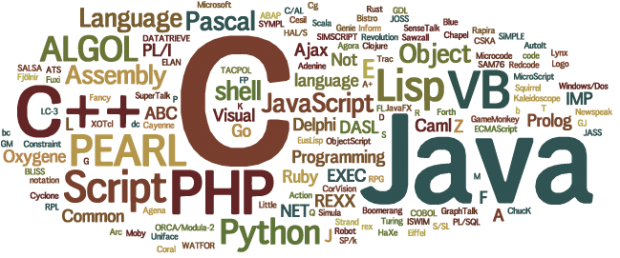

Programski jezik je računalni jezik osmišljen kako bi stvorio standardni oblik naredbi. Te se naredbe mogu tumačiti u kod koji razumijeva stroj. Programi se stvaraju pomoću programskih jezika za kontrolu ponašanja i izlaza stroja kroz točne algoritme, slično ljudskom komunikacijskom procesu.Programski jezik je također poznat kao programski sustav, računalni jezik ili računalni sustav.
Programski jezici se obično nazivaju računalnim jezicima. Međutim, neki autori smatraju programske jezike kao podskupove računalnih jezika. Od najstarijih oblika programskih jezika kao što su COBOL i FORTRAN, razvijene su tisuće računalnih jezika.
Osnovna podjela programskih jezika je: 1.Sekvencijalni 2.Proceduralni 3.Funkcijski 4.Objektno-orijentirani 5.Assembler
